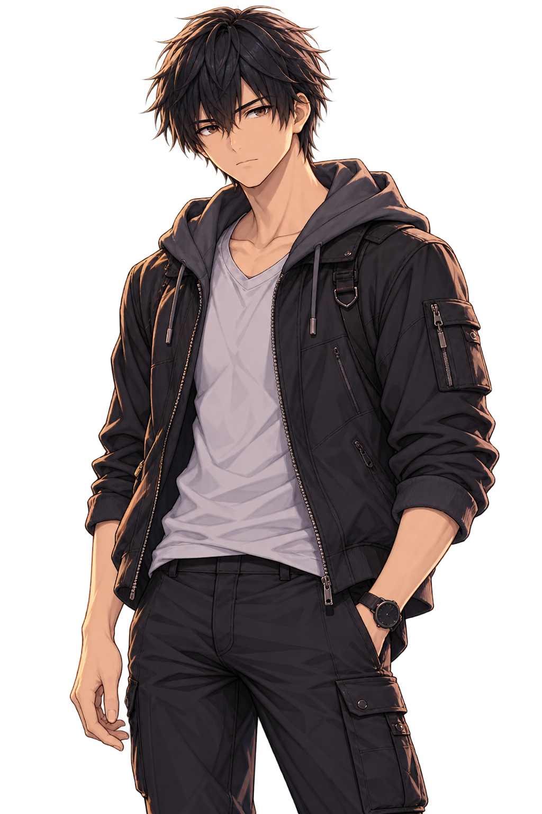
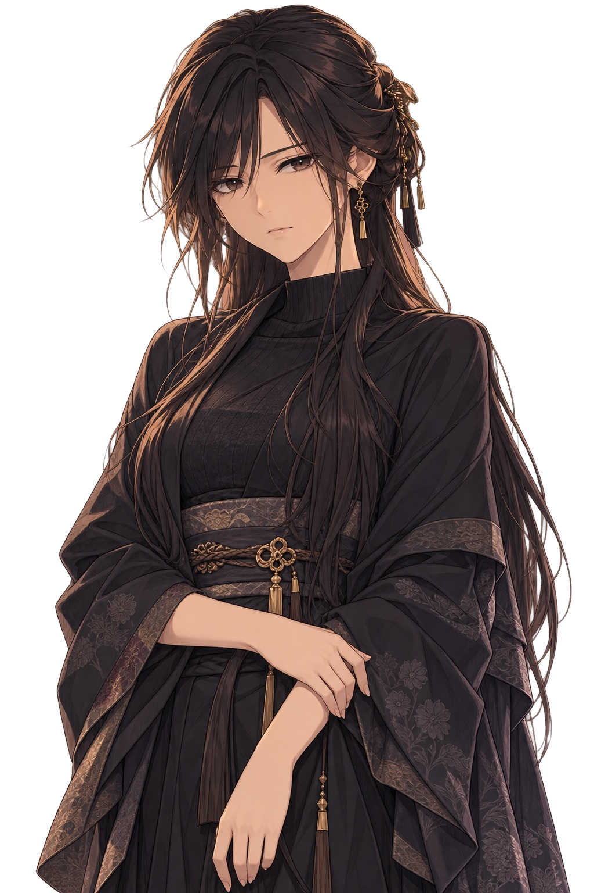
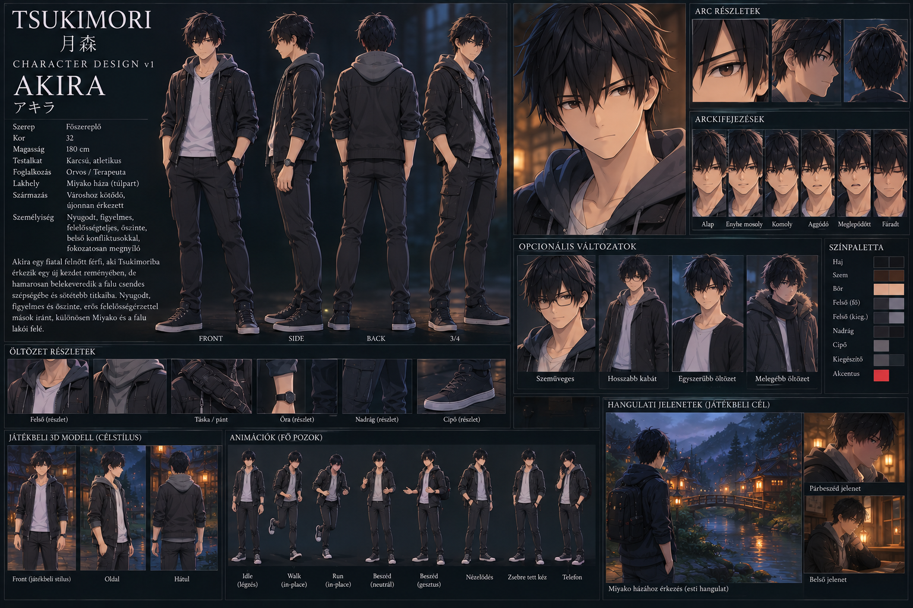

AKIRA
EREDETI · PRIMARY APPROVED · 1024 × 1536Fekete haj, barna szem, szemüveg nélkül, sötét városi kabát szürke kapucnival. Utcai és intró alapöltözet.
A két jóváhagyott forrás valós, változtatás nélküli megjelenítése egy közös vizuális felületen. Ez a nézőlap nem generál új arcot, nem teszi automatikusan azonossá a rajzstílusukat, és nem kész játék-CG.

Fekete haj, barna szem, szemüveg nélkül, sötét városi kabát szürke kapucnival. Utcai és intró alapöltözet.

Sötét haj, barna szem, aranydíszek, eredeti magas nyakú, mintás fekete viselet. Ugyanaz a nő a későbbi reakciókban.
A többnézetű referencia feliratai nem történeti döntések; a vizuális azonosításra szolgál.
